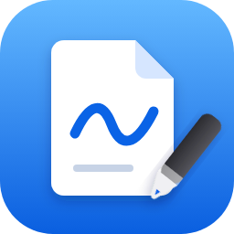
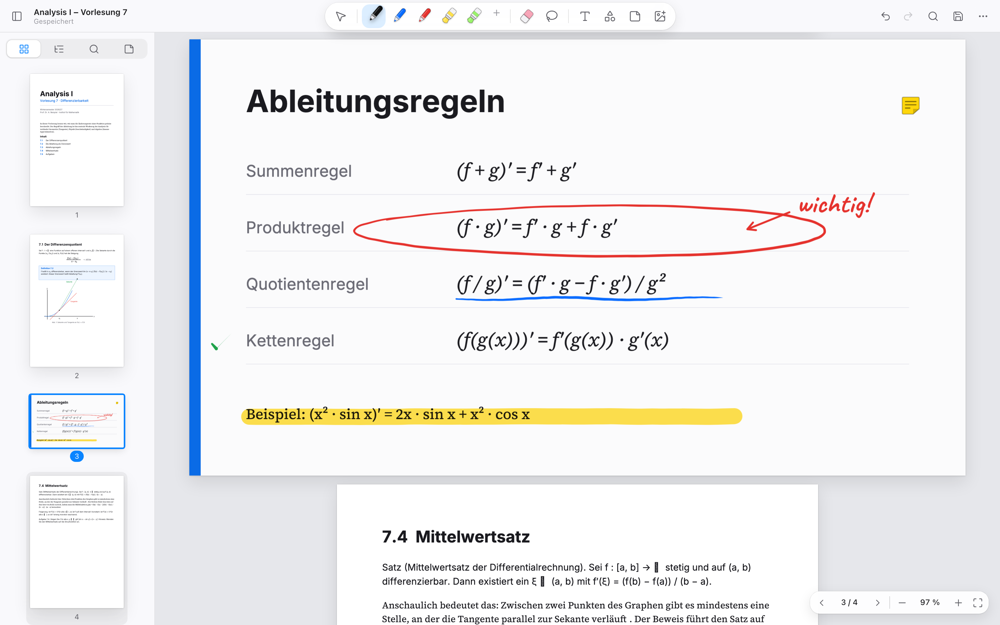
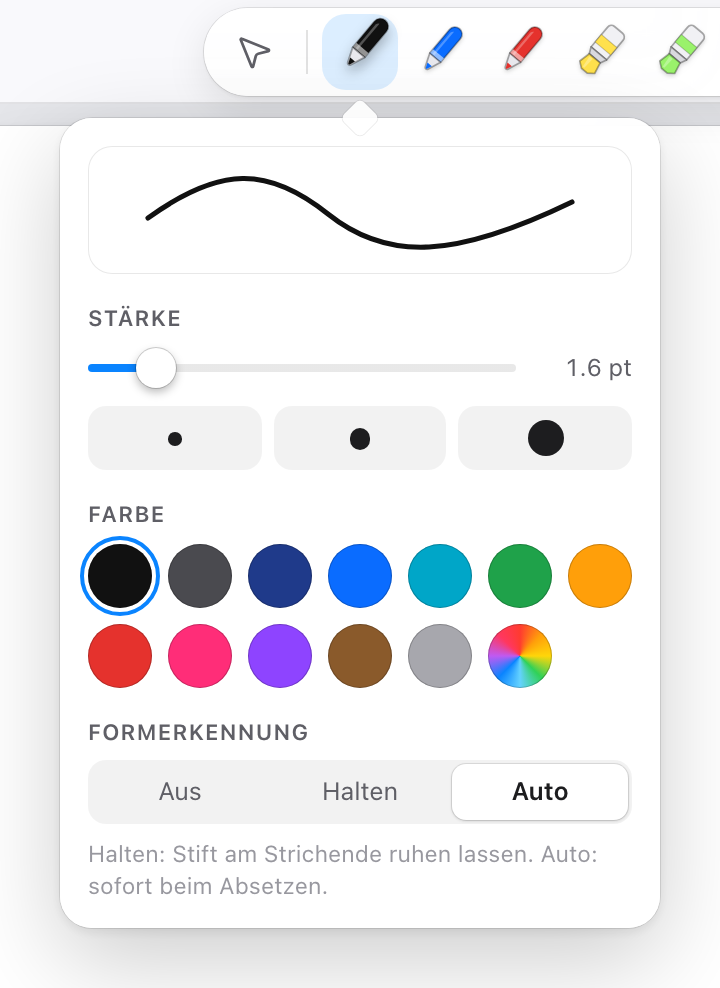
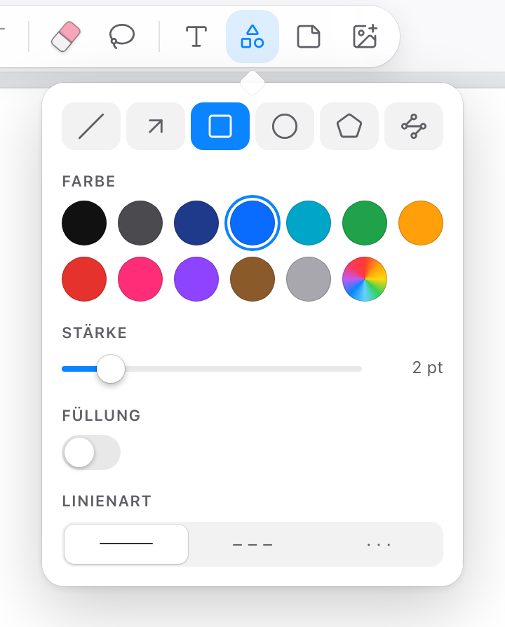
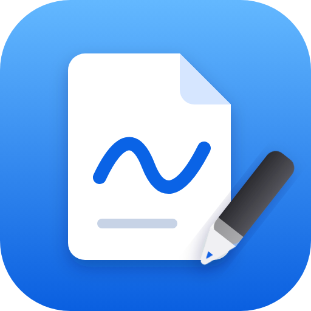

Tinte mit Gefühl
Druck und Tempo formen jeden Strich wie bei einem echten Füller: sanft anlaufend, kräftig in der Mitte, elegant auslaufend.

ScriboFür Windows 11 · Kostenlos · Open Source
Scribo ist der PDF-Editor für handschriftliche Notizen im Studium. Druckempfindliche Tinte, Formerkennung und deine Stifttasten – minimalistisch, schnell und komplett offline.
Windows 10 / 11 · 64-Bit und ARM64 · kein Konto, kein Tracking

Druck und Tempo formen jeden Strich wie bei einem echten Füller: sanft anlaufend, kräftig in der Mitte, elegant auslaufend.
Kreis, Ellipse, Rechteck, Dreieck oder Linie: Ruhe kurz mit dem Stift, und deine Skizze rastet sauber ein. Oder sofort beim Absetzen.
Taste 1 radiert ganze Linien, Taste 2 öffnet das Lasso. Die Belegung ist frei einstellbar, mit Live-Test für deinen Stift.
Umkreise Handschrift mit dem Lasso und verschiebe, skaliere, drehe, kopiere oder färbe sie um. Alles mit Rückgängig.

Deine Lieblingsstifte und Textmarker liegen immer in einer ruhigen Leiste. Ein Tipp wählt, ein zweiter öffnet Farbe, Stärke und Formerkennung. Per Ziehen sortierst du um.
Wie du es von klassischen PDF-Editoren kennst. Deine Notizen stehen danach in der PDF, sichtbar in jedem Programm und in Scribo jederzeit weiter bearbeitbar.
Linien, Pfeile, Rechtecke, Ellipsen und Polygone mit Füllung und Strichart. Textfelder in vier Schriften, Haftnotizen als echte PDF-Kommentare, Bilder aus der Zwischenablage, Textmarker direkt auf markiertem PDF-Text.


Installation ohne Administratorrechte. Updates kommen automatisch von GitHub.
Hinweis: Scribo ist noch nicht code-signiert. Windows zeigt beim ersten Start deshalb „Der Computer wurde durch Windows geschützt“. Klicke auf Weitere Informationen und dann auf Trotzdem ausführen.
Du bist nicht unter Windows? Probiere Scribo direkt im Browser aus (Chrome oder Edge empfohlen).